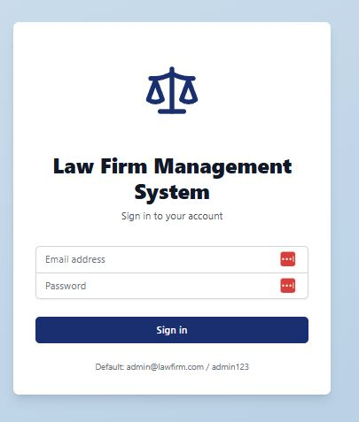
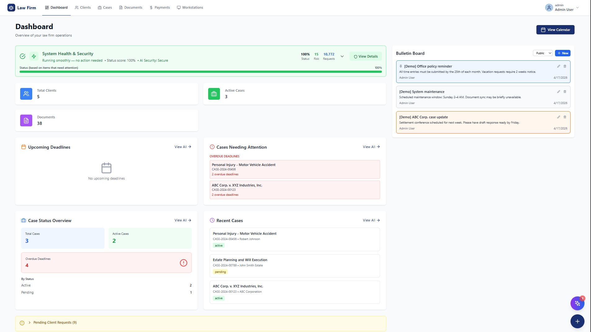
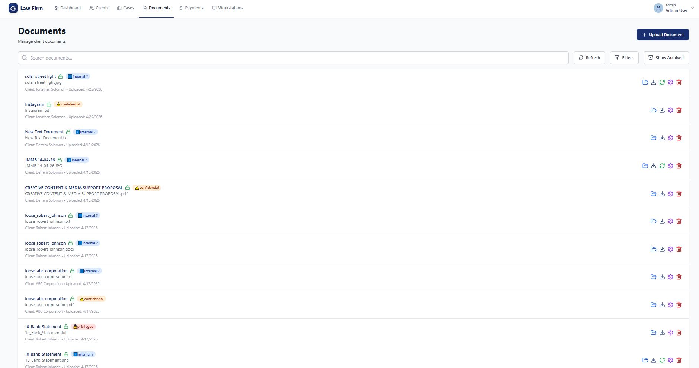
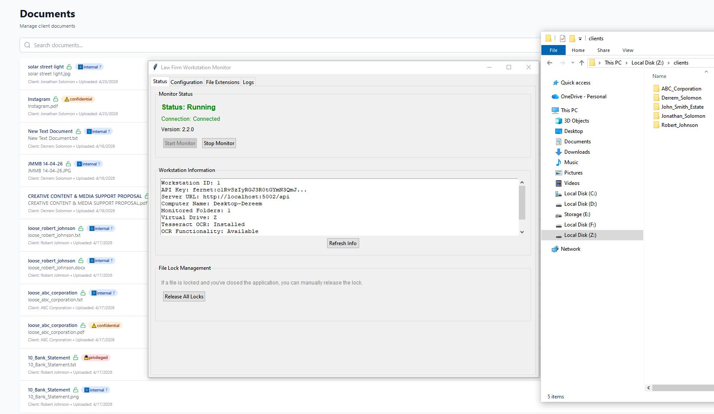

Secure Document Management SystemDesigned for lawyers
Give your firm one place for matters, documents, workstations, and billing—with strong encryption, clear access rules, and visibility your partners can trust.


Web App Dashboard
Counts, matters, security pulse, bulletins, and intake queue
Admin

Document Manager
Browse and manage all files across workstations
User

Workstation Management
Monitor and manage connected workstations
Admin

Security Dashboard
Real-time security monitoring and threat detection
Security

Archive System
Local and server-based file archiving
Storage

System Logs
Comprehensive activity and security logging
Admin